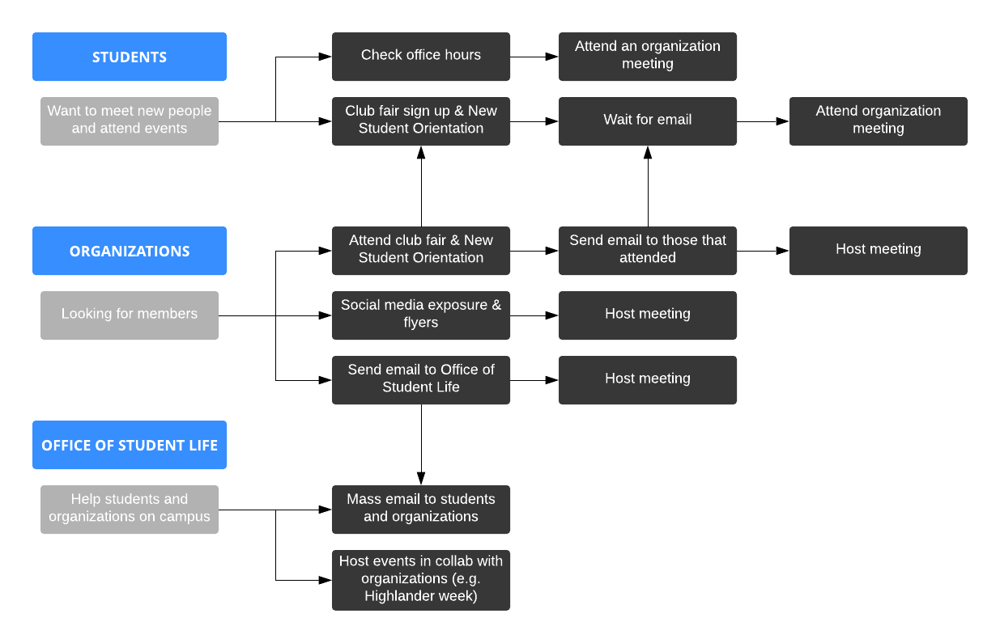
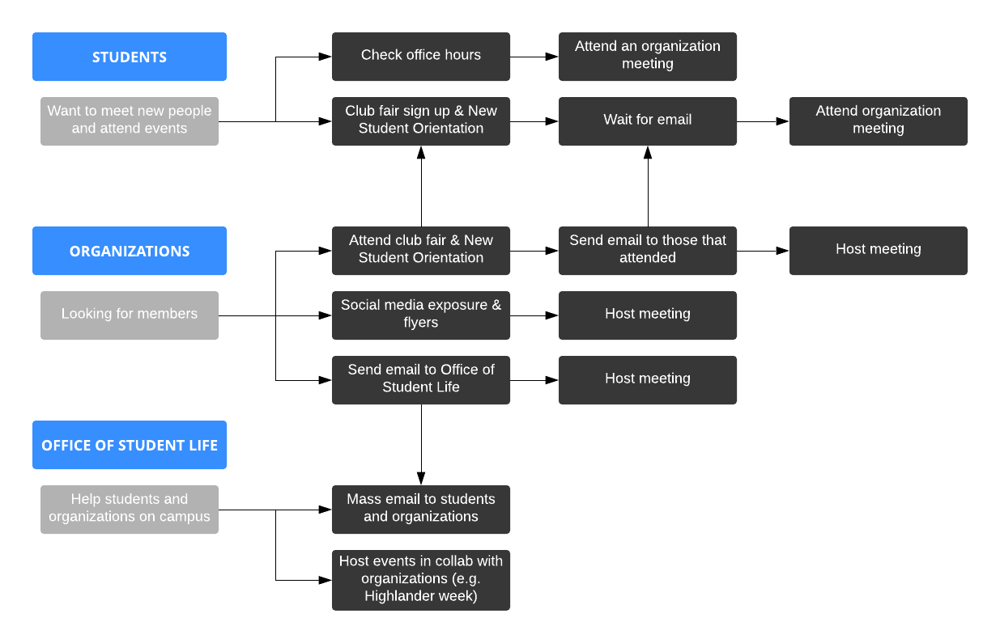
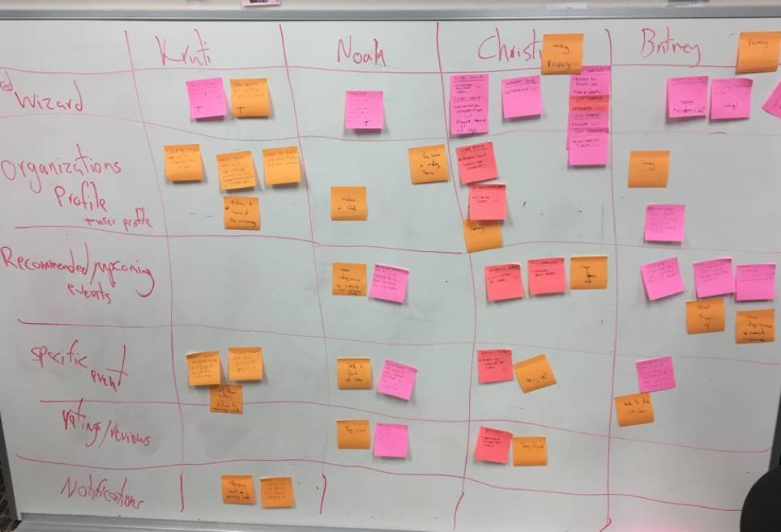

DAY 1
Understanding the Problem
Based off of our long term goal, we thought about the problems that we'll face when creating the application and found two big issues:
- How do we get input for the app?
- How do get students to use it?
With those two questions in mind, we needed to make sure the target question we decide will be a good foundation.
We narrowed down our options to two targets:
- How do we get input that help students understand the sense of a club/organization?
- How do we ensure that official events don't overshadow self-organized events?
Key Players
Students, Organizations, and Office of Student Life
We next drew a map of contributions by the key players. It was created to understand how they will interact with our product.
 

How might we ...
Turning Problems into Opportunities
Everyone wrote down their own HMW notes to share their insights of how to solve the problem from multiple angles. After posting them to the wall, we reviewed the different ideas and organized them into into categories like "retention to events", "signing up for clubs", "promotion & announcements."
HMW: Create announcements made by individual users and groups?
HMW: Connect students with organizations based on their interests?
HMW: Increase retention rate at meetings for organizations?


DAY 2
Creating Solutions
For this portion, we developed our own solutions individually. We followed the four-step sketch which involves note taking, jotting down ideas, drawing up crazy 8s, and finally coming up with the solution sketch.
Everyone shared an application or website that they will draw their inspiration from. I wanted to understand how the user will grab a sense of a club or organization at first glance.
In this case, I drew my inspiration from Spotify, the music streaming service. Contained inside are thousands of artists, I wondered how did users decide which one to listen to?
DAY 3
Critiques
Next step was showcasing our sketches and voting for the ones that closely relates to our original challenge: How do we improve student experiences by focusing on student social life at New Jersey Institute of Technology?
Everyone was given strips of post-it notes to cast their votes. As Decider, I was in charge of the supervote. I voted based on sketches that followed our long-term goal, but also had a good foundation. This will ensure that it'll be a sustainable app that can be reused. We then separated the winners from the losers. Any ideas or concepts on the winners side will be used in our app.


Storyboarding
In light of the user, we created a storyboard to show how a typical day will look if they used our app. We grabbed post-its from the winners side to help build the application we had in mind.

DAY 4
Prototyping
With the storyboard made, we were ready to start prototyping. Everyone was assigned different roles to make the process faster. This included:
- 2 Makers
- [Role] Writer
- Asset Collector
- Stitcher
As Writer, I was in charge with writing relevant content for the application.
Made with Axure
PrototypeDay 5
Usability Tests
We followed a series of steps starting from Day 2 to prepare for the usability tests on Day 5. The steps were as followed:
Recruiting: Everyone on the team helped with recruiting participants that were either students or faculty members of NJIT
Interview Guide: Created by the Facilitator on Day 4
Equipment: QuickTime Player to screen record and capture audio
Usability Test: Each sprinter was in charge of testing at least one individual
After interviewing we jotted down our responses based off of the main functions of our application. Finally, we analyzed and discussed how to improve our current design.
Outcome
Overall, the participants were excited that we designed an application that encourages students to attend events and join organizations. Some wording on the app was vague for some participants to understand. We also found that they were concerned about their privacy.
As a research lab that focuses on how people build and maintain social ties through technology, this project is an eye opener. Our lab is currently working on various other projects at the moment, but we do plan on coming back and making this application a reality.